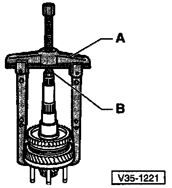
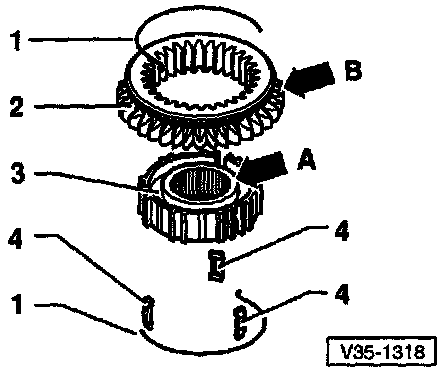
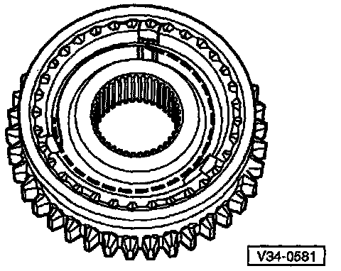
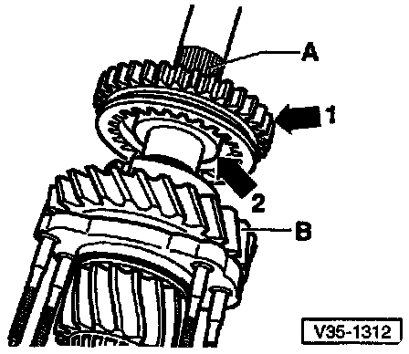
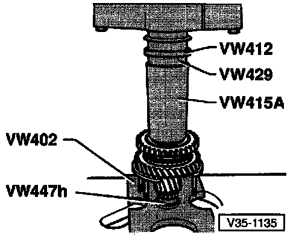

Disassembling/Assembling 1st/2nd Operating Sleeve/Gear Hub

Removing 1st/2nd Gear Operating Sleeve With Synchro-hub
- Remove circlip
- Pull off operating sleeve/synchro-hub assembly using bearing support
- A = Separator, 22-115 mm e.g. Kukko 17/2
- B = 17 mm hex-head bolt (M10 x 20)
- Support the separator tool so that the lst/2nd gear operating sleeve stays in position and is NOT pulled off

Assembling 1st/2nd Gear Operating Sleeve And Synchro-hub
- 1 Spring
- 2 Operating sleeve
- 3 Synchro-hub
- 4 Locking piece
- Press operating sleeve over synchro-hub
- After assembly, wider shoulder of synchro-hub (arrow A) and outer splines of operating sleeve (arrow B) face in opposite directions
- Recesses for locking pieces, in synchro-hub and in operating sleeve, must be aligned

Assembled View Of 1st/2nd Gear Operating Sleeve And Synchro-hub
- Operating sleeve pressed over synchro-hub
- Insert locking pieces and install springs
- Spring ends must be offset by 120°
- Bent end of spring must engage in locking piece

Installation Position Of 1st/2nd Gear Operating Sleeve/synchro-hub
- Splines on operating sleeve (arrow 1) face toward splines for 3rd gear (3GR) and 4th gear (4GR) synchro-hub (A)
- Wide shoulder of synchro-hub (arrow 2) faces toward 1st gear (B)

Pressing On 1st/2nd Gear Synchro-hub With Operating Sleeve
- Before pressing on, place 1st gear synchro-ring onto 1st gear